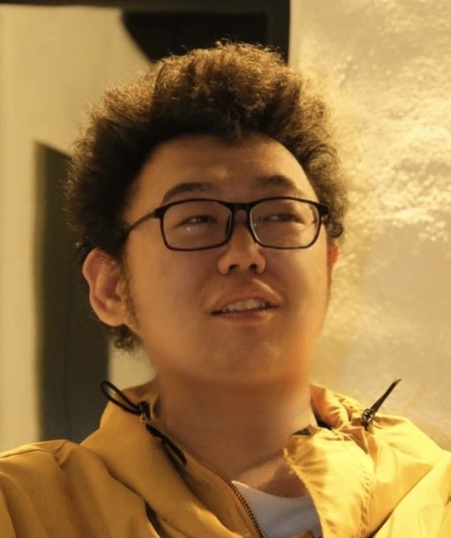

I am a PhD student in the CLAN Lab, Department of Computer Science, Aarhus University, Denmark, under the supervision of Akhil Arora.
Before that, I received my Master’s degree from the University of Copenhagen, Denmark, advised by Daniel Hershcovich and Maria Maistro. In 2024, I was a visiting student at National Taiwan University, Taiwan. I was a Researcher and Developer in Basic Search Team at Baidu Search, China during 2018-2022, and I received my BSc in Software Engineering at Dalian University of Technology, China in 2019.
I work at the intersection of LLMs, information retrieval, and computational social science, with a particular focus on knowledge, culture, reasoning, and developing NLP technologies to better support underrepresented communities. If you share these interests, I would be happy to connect and explore potential collaborations.
For students based in Denmark, if you are looking for thesis/project supervision in NLP on your bachelor’s or master’s thesis or project, you are very welcome to get in touch.

{kind=link}